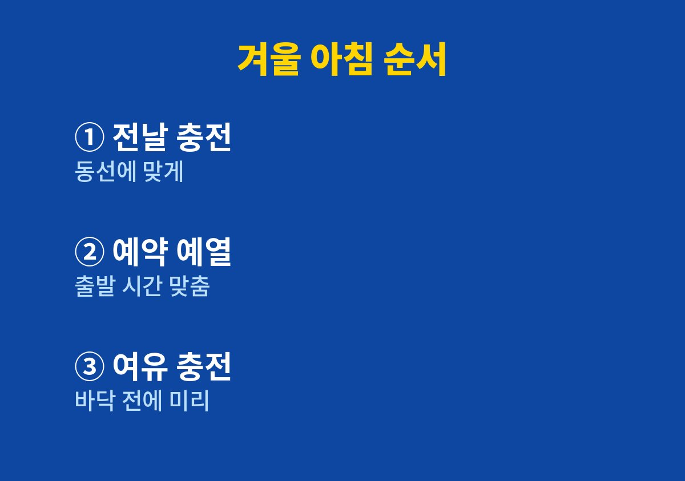

전기차 겨울 주행거리를 실제로 해 본 기준과 순서 위주로 풀어 본다. 이 글은 날이 추워지면서 전기차 계기판의 남은 거리가 눈에 띄게 줄어 불안한 사람을 위해 쓴 글이다.
2026년 11월 기준으로 제조사 설명서와 공공기관 인증 정보에서 확인할 수 있는 내용, 그리고 내가 출퇴근과 아이 등원을 하며 바꿔 본 습관을 함께 정리했다.
충전기를 찾아 헤매던 아침이 줄어든 과정을 그대로 적었다.
전기차 배터리는 기온이 낮아지면 화학 반응이 느려져 같은 양을 충전해도 쓸 수 있는 에너지가 줄어든다.
여기에 실내 난방까지 배터리 전기로 돌리니 겨울 주행거리가 짧아지는 것은 자연스러운 일이다.
처음에는 고장인 줄 알고 서비스센터에 물어볼까 고민했는데 대부분의 전기차가 겪는 현상이었다.
나는 남은 거리가 줄어드는 숫자를 보면서 히터를 끄고 패딩을 입은 채 운전한 적도 있다.
뒷좌석 아이들이 춥다고 하니 결국 히터를 다시 켰고 그때마다 계기판만 쳐다보게 됐다.
문제는 추위 자체보다 계획 없이 출발하는 습관이라는 것을 나중에 알았다.
여름에는 한 번 충전으로 며칠을 다녔기 때문에 겨울에도 같은 감각으로 움직였다.
그러다 퇴근길에 남은 거리가 예상보다 빨리 줄어 근처 충전소를 급하게 찾은 날이 있었다.
그날 이후 계절에 따라 하루에 쓰는 거리를 다르게 계산해야 한다는 것을 받아들였다.
전기차는 공식 인증 정보에 상온 주행거리와 저온 주행거리가 따로 표시된다.
나는 내 차의 저온 주행거리를 먼저 확인하고 겨울에는 그 숫자를 기준으로 하루 동선을 짰다.
예열과 배터리 관리 기능은 차종마다 이름과 작동 방식이 달라 차량 설명서에서 찾아 읽었다.
인증 정보를 찾아보는 데는 생각보다 시간이 오래 걸리지 않았다.
숫자를 알고 나니 막연히 불안해하던 마음이 줄고 몇 번 충전해야 하는지가 분명해졌다.
특히 주말에 아이들과 멀리 나가는 날에는 저온 주행거리를 기준으로 중간 충전 장소를 미리 정해 두었다.
| 확인 항목 | 확인하는 곳 | 내가 정한 기준 |
|---|---|---|
| 저온 주행거리 | 공식 인증 정보·제원표 | 겨울 동선은 이 숫자로 계산 |
| 출발 전 예열 기능 | 차량 설명서·앱 | 충전기 연결 상태에서 예약 |
| 난방 방식 | 차량 설명서 | 열선 위주로 먼저 사용 |
가장 효과가 컸던 것은 출발 시간에 맞춰 실내를 미리 데우는 예약 기능이었다.
충전기에 연결된 상태에서 예열하면 난방에 드는 전기를 충전 전력으로 쓸 수 있어 출발할 때 배터리가 덜 줄었다.
아이들을 태우는 아침에 차가 이미 따뜻하니 서두르는 일도 줄었다.
운전 중에는 실내 공기 전체를 데우기보다 시트와 핸들 열선을 먼저 켜는 쪽으로 바꿨다.
몸에 닿는 부분이 따뜻하니 공조 온도를 조금 낮춰도 크게 춥지 않았다.
뒷좌석 열선이 있는 차라면 아이들 자리부터 켜 두는 것이 효과적이었다.
겨울에는 배터리가 바닥에 가까워질 때까지 기다리지 않고 여유가 있을 때 충전한다.
급속 충전은 주행 직후 배터리가 데워져 있을 때 하는 편이 대기 시간이 덜 답답했다.
실내 주차가 가능한 날에는 지하 주차장을 골라 배터리가 덜 식도록 했다.
아래 순서는 내가 평일 아침마다 실제로 하는 흐름을 그대로 옮긴 것이다.
처음 며칠은 번거롭게 느껴졌지만 일주일쯤 지나니 몸에 익어 따로 신경 쓰지 않게 됐다.
차종에 따라 메뉴 이름이 달라도 순서 자체는 크게 다르지 않다.

겨울 전기차 운전은 남은 거리를 걱정하는 일에서 미리 계획하는 일로 바꾸면 훨씬 편해진다.
예열 기능과 배터리 관리 방식은 차종과 소프트웨어 버전에 따라 다르니 설명서와 제조사 안내를 꼭 함께 확인하는 것이 좋다.
타이어 공기압도 기온이 내려가면 낮아지니 계기판 경고를 가볍게 넘기지 않는다.
다음 글에서는 겨울철 자동차 보험 갱신 때 내가 꼭 다시 확인하는 항목을 정리할 예정이다.
※ 2026년 기준 공공기관 안내와 개인 경험을 바탕으로 정리한 글이며, 차종과 연식에 따라 기준이 다를 수 있어 차량 설명서와 공식 안내를 함께 확인하길 바란다.